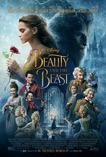

Movies in America

The history of film began in the 1890s, when motion picture cameras were invented and film production companies started to be established. Because of the limits of technology, films of the 1890s were under a minute long and until 1927 motion pictures were produced without sound. The first decade of motion picture saw film moving from a novelty to an established mass entertainment industry. The films became several minutes long consisting of several shots. Not long after this, many new film studios began to be built and started producing the country's first major motion pictures. The first successful permanent movie theatre was "The Nickelodeon" in Pittsburgh in 1905 and by 1910 American films were not only dominating the national market but they were a global success as well.
At the start of the First World War, French and Italian cinema had been the most globally popular. The war came as a devastating interruption to European film industries. The American industry, or "Hollywood", as it was becoming known after its new geographical center in California, gained the position it has held, more or less, ever since: film factory for the world and exporting its product to most countries on earth. By the 1920s, the United States reached what is still its era of greatest-ever output, producing an average of 800 feature films annually, or 82% of the global total. In 1927, sound became incorporated with film and that put film forward by leaps and bounds as artists such as Walt Disney became involved. The rest is history
2017 was a very unique year for cinema as it broke some major milestones in the film industry. Even with the year not even over yet, some great films have come out of this year. Some of the most famous films of this year include "Beauty and the Beast," "The Fate of the Furious," "Despicable Me 3," and "Spider-Man: Homecoming." The film industry has recently been on the Superhero train and many production companies are investing a lot into these new superhero films such as "Justice League" and "Guardians of the Galaxy Vol. 2." Disney continues to dominate the box office due to their ownership of the Star Wars franchise as well as the Marvel franchise. This year was also a surprisingly big year for the horror genre due to the release of the movies such as "IT" and "Get Out."
| Top Grossing Movies of 2017 | |
|---|---|
|  | 
|

| |